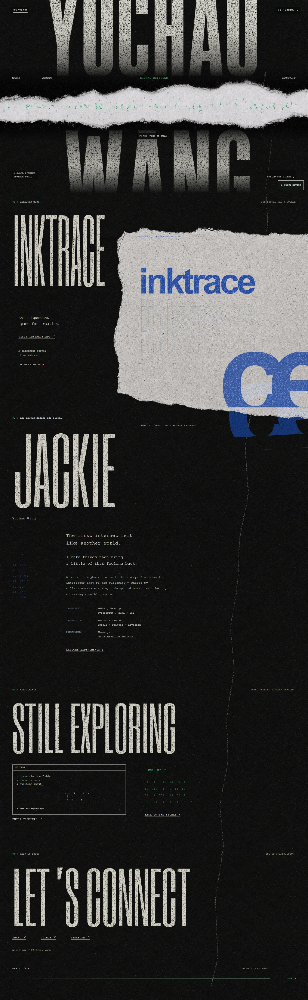
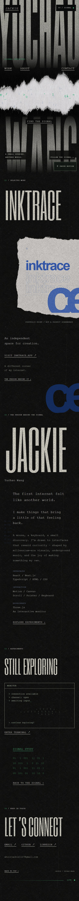

JACKIE / 连续黑纸版面
以下是 localhost:3011 的真实浏览器截图与滚动录屏，不是生成的概念图。录屏无声、手动播放；在首页可亲自体验裂隙、导航与 monitor 入口。
桌面整页 / 1440px

手机整页 / 390px，2× 像素密度

以下是 localhost:3011 的真实浏览器截图与滚动录屏，不是生成的概念图。录屏无声、手动播放；在首页可亲自体验裂隙、导航与 monitor 入口。

